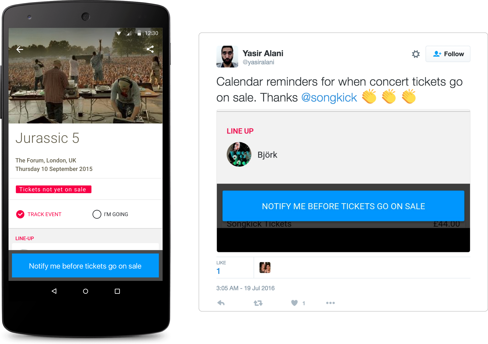

Notify me for Android

After Android and iOS, notify me will be rolled out across the web platforms. And yes, this is a real tweet.
Bringing Songkick to the masses.
As design lead of the growth team, I lead our team through a series of product design improvements across our funnel that unlocked a new mainstream user base. In turn this new user base lead to a defensible stream of demand that strengthened our position as a ticket vendor.
Role: Team Design Lead
Goal: Grow the number of mainstream fans of the Songkick apps and increase demand in concert tickets.
Timeframe: April to July, 2016 (Q2)
As a ticket vendor trying to build a defensible demand of fans that purchased tickets with us, we had hit a plateau as to what allocations we could sell. Songkick, while it had 12mm monthly active users across iOS, Android and Web, they mostly purchased tickets for smaller, more intimate concerts.
These were club gigs and underplays. Small venues in big cities. We were not reaching the mainstream concert goer that attends stadium and arena shows for big name artists. This is where the bigger problem lies, as 40% of concert tickets go unsold. If we could find a way to drive demand for these shows, then we could help not just smaller artists sell their tickets, but also larger ones like Disclosure and Kanye West.
Artists lose out on $25B of revenue annually from unsold tickets. This is a massive opportunity, and a figure that my team set out to help reduce.
With a clearly defined business challenge, I worked with those in strategy and business development to clearly outline the team’s goals, and how the Songkick consumer platform could increase our defensible demand. The next step was researching why we were unable to attract and retain this fan base and lead a team to meet this goal.
Our goal was to increase the measured demand of mainstream shows (by a confidential, but significant, amount) from the Songkick fan apps. This included all apps in the ecossytem, iOS, Android and web. We work on any part of the platform we deemed necessary.
This mainstream cohort that we identified by their concert attendance and music listening behavior were less likely to successfully onboard and activate, and also less likely to be retained as monthly active users.
Before starting, it was critical that we did a health assessment of where we currently were. Our assessment of the current product ecosystem showed that our key metrics across the Pirate Metic Funnel (AARRR) were not sustainable to retain the mainstream fanbase that we needed.
This was measured by the number of taps on our purchase links across the platform (iOS / Android and Web.) By measuring number of taps on those key indicator buttons, we could correlate the increase to the potential increase in our stored demand for tickets.
After doing a deeper dive of this segment from a qualitative perspective, we still did not have a good feel for who these fans were. We only had small pieces of the puzzle; we knew 49% of mainstream fans tracked Nicki Minaj on Songkick, and that mainstream users are more likely to connect with Facebook, but are half as likely to scan Spotify. But where did that leave us? We were still in the dark with a lot of personal assumptions about who we were trying to target.
In order to validate our key assumptions about this cohort, I organized a lean canvas session with my team. This was the starting ground of a research process to get a full picture of who we were targeting. I selected the lean canvas session because it was a great way for our team to converge on all of our assumptions around not only these fans, but what we thought were the solutions to their pain points.
This was the combined efforts of our team as we moved across the canvas, sharing our assumptions for each segment.
With all of our team members assumptions collected, I developed a research program to interview 8 fans that met our expected purchase patterns, and see if their behavioural patterns matched up to our assumptions shared in the lean canvas exercices.
The output was a series of validated (green), invalidated hypothesis (red) or some that needed additional probing (orange).
The result was a series of learnings that allowed us to be confident in some of our hypothesis, but also an interesting narrative. One participant that caught our eye was Joe Walsh, a fan that fit the bill of the mainstream concert goer. When I followed up with Joe, he told his story of his first experience with the Songkick service. In summation, the Songkick app alerted him of a show he was interested in, but failed to help him purchase tickets.
Below is a timeline of Joe’s user experience with Songkick and the narrative that was shared with the team.
By illustrating the narrative of Joe Walsh (not his real name), and putting the story into the pirate metric funnel, we were more easily able to imagine and relate to our fans pain points.
This all led to several sessions of research where we validated several value propositions that emerged from previous research. These value propositions later drove the direction of the ideas as we not only knew the pain points the mainstream fans, but we also knew more about their perception regarding what could fix these pain points.
Through several sessions of research, we were able to validate and refine our UVPs by just showing them the text of proposition and discussing it from there.
By testing several value propositions, we were able to go further than just identifying pain points. We found the basis of our core products and services (before building anything!) Now it was time to get started on delivering on our value propositions.
After the initial user research session and several additional rounds of research (including more phone interviews and surveys) to validate our value props, we were ready to start focusing on the solutions. In order to leverage the perspective of our team members and also those outside of our team, I ran a cross functional design studio.
The main aim of the sketch session is a brainstorm where everyone participates - ensuring that we avoid group think and that everyone has a chance to contribute.
Shots from the cross design team design studio where we ran 3 separate sessions spread over a week - each session focusing on a different section of the pirate metric funnel.
Sketches from various team members including engineering, ticketing operations, QA, product management, UI design and many others.
Side note: Want to learn more about sketch sessions? Read more about the 100+ person sketch session madness that I ran at Songkick
here.
By taking a look at our competition we were able actually quickly draw some inspiration around how we could improve and enhance our current communication design to fullfill this unqiue value prop. It was a healthy exploration to help us think beyond just our platform and brand.
An a snapshot of other notification emails in the ticketing and event vertical.
Over the course of several design sprints, we tested various designs via multivariate email tests. By iterating on the design we were looking to answer 2 key questions:
By designing over 40 multivariate tests, we were able to test the copy, timing and desired behavior of the feature with minimal development effort.
This led to the concept and design of “Notify me” across iOS, Android and our web app in the form of a calendar reminder and also a push notification.
Working directly with our Android and iOS developers, we navigated the user permissions needed to integrate a calendar entry to make the experience seemless as possible. Their insights and domain knowledge once again, proved to be invaluable in shaping the design.

Android and iOS "Notify Me" via calendar flow
After Android and iOS, notify me will be rolled out across the web platforms. And yes, this is a real tweet.
In the end we managed to push the needle of demand to mainstream events through a shift in our value proposition and several new features, including "Notify Me".
*These are aggregate results across the entire ecosystem (not broken out by platform.)
If you are viewing this then you have been shared the link directly which contains private information regarding Songkick. Please do not share this link.